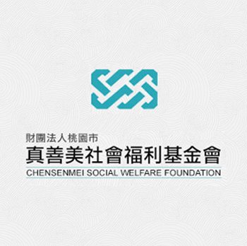

管理學-真善美基金會
真善美基金會創建的目的是「給予老憨兒們一個溫暖的家」， 我們跟老憨兒們相處一個早上的時間，帶著他們玩小遊戲， 而在這過程之中更了解他們的生活，真的是一群很純真很可愛的朋友們。
是我最早接觸街舞上認識的第一群人,
由10個擁有共同興趣的人們組成,高二
的時候我們共同完成一場屬於我們的成
發,也是我高中三年中來最重要的人們。

管理學-真善美基金會
真善美基金會創建的目的是「給予老憨兒們一個溫暖的家」， 我們跟老憨兒們相處一個早上的時間，帶著他們玩小遊戲， 而在這過程之中更了解他們的生活，真的是一群很純真很可愛的朋友們。
企業概論-方舟蛋捲
我們與方舟啟智教養院合作，藉由我們的行銷策略，幫助在教養院的老憨兒們親手製作的蛋捲銷售出去。在這過程中，我學習到與課本上白紙黑字不同的是，我要學習去應變，面對不同狀況，我該抱持怎樣的態度與想法，讓我對於行銷方面有更不一樣的想法與成長。
網頁程式設計-雞響OMG
透過與甲班前端的合作，再加上我們後端的功能，共同架設一個購物平台的網站，這過程中除了要一直檢視資料庫的問題，還有更多關於網頁流程的邏輯，真的花了不少心力，也很開心與這三位組員同組，甚至到最後Demo前一天四個人待在同一空間持續了快20小時都在處理後端的狀況，到最後一刻都不敢鬆懈與放棄!
多媒體程式設計-涼涼水
這次我們擔任前端的部分，到前端才知道原來當初甲班當時做的設計是花了多少時間與心力去完成，我覺得多媒體除了javascript要順邏輯之外，更重要的是要清楚知道各個屬性可以適用的地方，要有深厚的基礎才可以打好地基，一步一步地在往上加，才能做出屬於自己的網頁!